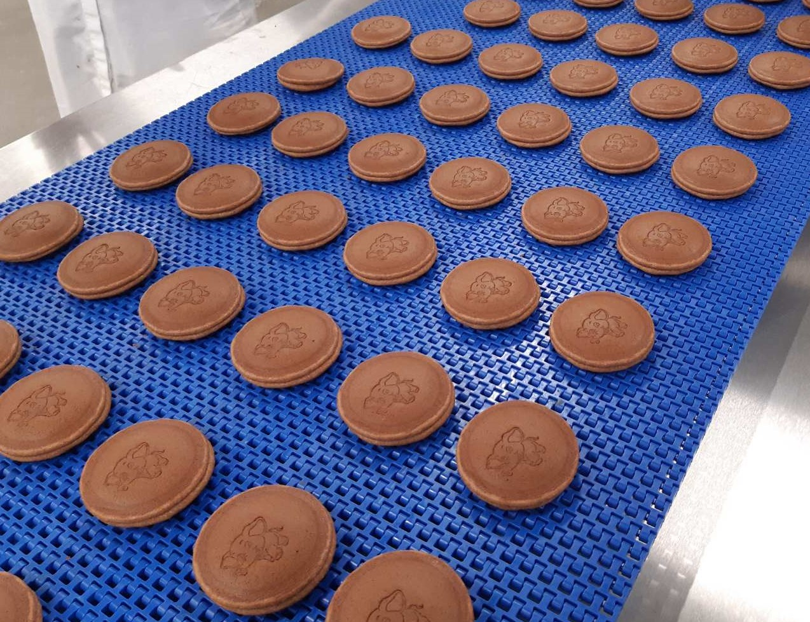

Početna › Edukacija
IHIS Nutricionizam organizuje godišnja savetovanja, radionice i predavanja namijenjena proizvođačima hrane, distributerima, maloprodajnim lancima i svima koji žele da unaprede znanje iz oblasti prehrambene regulative i nutricionizma.

Međunarodno savetovanje „Hrana, ishrana i zdravlje" je vodeće regionalno stručno okupljanje posvećeno aktuelnim temama u oblasti prehrambene industrije, nauke o ishrani i regulative.
Učesnici su stručnjaci iz prehrambeih kompanija, akademske zajednice, regulatornih tela i medija iz Srbije i regiona.
Teme: ispravno deklarisanje, EU usklađivanje, funkcionalna hrana, nutritivne i zdravstvene tvrdnje, bezbednost hrane.
Prijavite seGodišnja i tematska savetovanja otvorena za sve zainteresovane iz prehrambene industrije.
Prilagođene radionice za timove unutar kompanije — razvoj, marketing, QA, regulativa.
Predavanja na konferencijama, sajmovima i u saradnji sa visokoškolskim institucijama.
Održano 24.05.2022. u hotelu Holiday Inn u Beogradu.
Održano u Beogradu u hotelu Crowne Plaza, Vladimira Popovića 10, Novi Beograd.
U organizaciji IHIS Nutricionizma.
Hotel Crowne Plaza, Beograd. Obrađene teme:
Okrugli sto „Od propisa do prakse" — moderator: dr Danica Zarić
Učesnici: Ministarstvo poljoprivrede RS, Granična sanitarna inspekcija MZ RS, akademici.
Hotel Hyatt Regency, Beograd.
Zainteresovani za internu obuku za vaš tim ili za prisustvo sledećem javnom savetovanju? Kontaktirajte nas.
Kontaktirajte nas